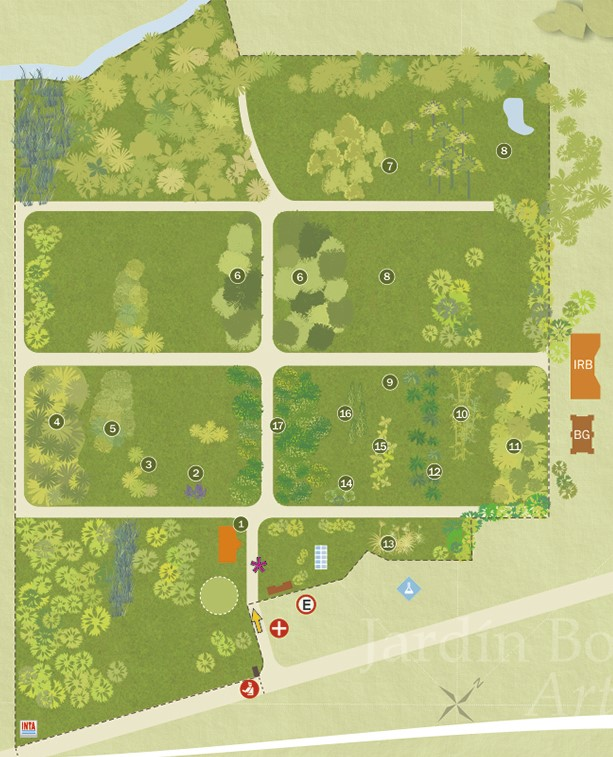

Mapa
Tocá los nombres de los sectores para iluminar su área.

Referencias
1 Cactus, Crasas y Orquídeas
2 Jardín de Aromáticas
3 Plantas Medicinales
4 Leguminosas
5 Árboles urbanos
6 Mirtáceas
7 Regiones Fitogeográficas
8 Pastizal Pampeano
9 Rodofialas
10 Bambúceas
11 Gimnospermas
12 Avenida de las Palmeras
13 Jardín de Gramíneas
14 Sendero de Atracción de Mariposas
15 Casuarinas
16 Salicáceas
17 Avenida de los Robles
INTA Entrada INTA
▬ Anexo
👮 Control Policial
░░ Sector de Invernáculos
+ Primeros Auxilios
Instituto de Recursos Biológicos
E Estacionamiento
Banco Base de Germoplasma
➔ Acceso JBAER
🔷 Lab. de Aromáticas
Centro de Visitantes
✻ Usted está aquí
💧 Laguna